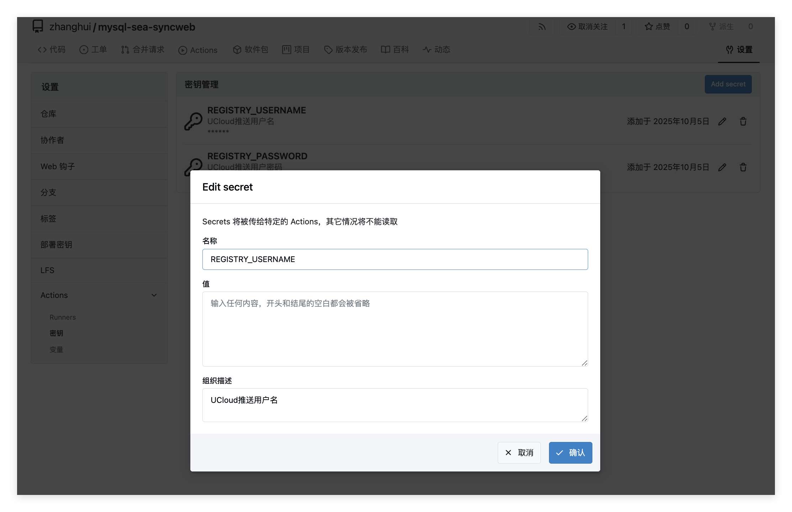

CICD
如何配置一次推送到多个仓库
首先在局域网gitea和公网github上都创建好仓库
先添加Gitea作为第二个push地址，push时先推Gitea（内网快），再推GitHub（外网慢）
git remote set-url --add --push origin http://192.168.1.10:3000/zhanghui/mysql-sea-syncweb.git
git remote set-url --add --push origin https://github.com/freecow/mysql-sea-syncweb.git
添加GitHub作为第一个push地址
验证配置
git remote -v
# 应该看到
origin https://github.com/freecow/mysql-sea-syncweb.git (fetch)
origin http://192.168.1.10:3000/你的用户名/mysql-sea-syncweb.git (push)
origin https://github.com/freecow/mysql-sea-syncweb.git (push)
测试推送
# 推送当前分支（会同时推送到GitHub和Gitea）
git push origin dev
# 推送所有分支
git push origin --all
# 推送标签
git push origin --tags
如何保留两个远程仓库
参看当前远程仓库
添加Gitea远程仓库
git remote add gitea http://192.168.1.10:3000/你的用户名/mysql-sea-syncweb.git
# 现在有两个远程仓库：
# origin -> GitHub
# gitea -> Gitea
测试推送
# 推送到GitHub
git push origin main
# 推送到Gitea
git push gitea main
# 或同时推送到两个仓库
git push origin main && git push gitea main
如何编写workflow
在.github或.gitea目录中workflows下分别创建docker-build.yml
# 工作流目录独立
- GitHub: .github/workflows/
- Gitea: .gitea/workflows/
- 两者互不干扰
# Git支持多个远程仓库
- 可以同时推送到多个remote
在Gitea仓库中配置以下Secrets，路径为仓库名 → 设置 → Actions → 密钥，即REGISTRY_USERNAME和REGISTRY_PASSWORD

下面是.gitea/workflow/docker-build.yml
# 工作流名称
name: Build And Push Images
# 触发条件
on:
# 任意分支，main及dev等都触发
push: {}
# 手动触发
workflow_dispatch: {}
jobs:
build-and-push: # 定义Job
name: Build ${{ matrix.component }} for ${{ matrix.arch }}
# 运行器
runs-on: ubuntu-latest
env: # 全局变量
DOCKER_BUILDKIT: "1"
# UCloud仓库地址
REGISTRY: uhub.service.ucloud.cn
# UCloud命名空间
NAMESPACE: igalaxycn
strategy:
# 一个失败不影响其它矩阵项继续跑
fail-fast: false
matrix: # 交叉矩阵
arch: [ amd64, arm64 ] # 两个架构
component: [ backend, frontend ] # 两个组件
steps:
- name: Checkout # 拉取代码
uses: actions/checkout@v4
# 设置镜像tags，标签格式为<arch>-<YYYYMMDD>-<shortsha>，避免同日重复
- name: Set tags (date + short sha)
id: date
run: |
# 当天日期
echo "DATE_TAG=$(date +%Y%m%d)" >> $GITHUB_ENV
# 当前提交的 7 位短 SHA
echo "SHORT_SHA=$(git rev-parse --short=7 HEAD)" >> $GITHUB_ENV
# 安装binfmt，允许在x86 Runner上构建arm64等跨架构镜像（需要特权）
- name: Enable binfmt for cross-arch
run: |
docker run --privileged --rm tonistiigi/binfmt --install all
# 登录 UCloud 镜像仓库
- name: Docker login (UCloud)
run: |
# 为兼容历史变量名，依次尝试UCLOUD_USERNAME -> DOCKER_USERNAME -> REGISTRY_USERNAME
USERNAME="${{ secrets.UCLOUD_USERNAME }}"
[ -z "$USERNAME" ] && USERNAME="${{ secrets.DOCKER_USERNAME }}"
[ -z "$USERNAME" ] && USERNAME="${{ secrets.REGISTRY_USERNAME }}"
PASSWORD="${{ secrets.UCLOUD_PASSWORD }}"
[ -z "$PASSWORD" ] && PASSWORD="${{ secrets.DOCKER_PASSWORD }}"
[ -z "$PASSWORD" ] && PASSWORD="${{ secrets.REGISTRY_PASSWORD }}"
if [ -z "$USERNAME" ] || [ -z "$PASSWORD" ]; then
echo "username/password not provided. Please set one of the following secrets:" >&2
echo " - UCLOUD_USERNAME / UCLOUD_PASSWORD (preferred)" >&2
echo " - DOCKER_USERNAME / DOCKER_PASSWORD" >&2
echo " - REGISTRY_USERNAME / REGISTRY_PASSWORD" >&2
exit 1
fi
echo "Using registry: $REGISTRY"
echo "$PASSWORD" | docker login "$REGISTRY" --username "$USERNAME" --password-stdin
# 确定镜像构建Dockerfile
- name: Select Dockerfile and image name
id: select
run: |
# 根据矩阵中的 component 选择 Dockerfile 与镜像名，写入 GITHUB_ENV
if [ "${{ matrix.component }}" = "backend" ]; then
echo "DOCKERFILE=Dockerfile.backend" >> $GITHUB_ENV
echo "IMAGE_NAME=mysql-sea-syncweb-backend" >> $GITHUB_ENV
else
echo "DOCKERFILE=Dockerfile.frontend" >> $GITHUB_ENV
echo "IMAGE_NAME=mysql-sea-syncweb-frontend" >> $GITHUB_ENV
fi
# 构建镜像
- name: Build image
run: |
# 打包标签
FULL_IMAGE="$REGISTRY/$NAMESPACE/$IMAGE_NAME:${{ matrix.arch }}-$DATE_TAG-$SHORT_SHA"
echo "Building $FULL_IMAGE with $DOCKERFILE"
# 构建指定架构镜像，backend与frontend的amd64/arm64四个镜像
docker build \
--platform linux/${{ matrix.arch }} \
-f "$DOCKERFILE" \
-t "$FULL_IMAGE" \
.
# 推送镜像
- name: Push image
run: |
FULL_IMAGE="$REGISTRY/$NAMESPACE/$IMAGE_NAME:${{ matrix.arch }}-$DATE_TAG-$SHORT_SHA"
echo "Pushing $FULL_IMAGE with retry..."
# 最多5次重试
max=5
n=1
until [ $n -gt $max ]
do
# 推送镜像
if docker push "$FULL_IMAGE"; then
echo "Push succeeded"
break
fi
rc=$?
# 失败后15s、30s、45s、60s、75s回退重试
wait=$(( n * 15 ))
echo "Push failed (rc=$rc). Retry $n/$max after ${wait}s..."
# 每次重试前会尝试重新登录，以缓解偶发 50x/鉴权问题
if [ $n -lt $max ]; then
USERNAME="${{ secrets.UCLOUD_USERNAME }}"; [ -z "$USERNAME" ] && USERNAME="${{ secrets.DOCKER_USERNAME }}"; [ -z "$USERNAME" ] && USERNAME="${{ secrets.REGISTRY_USERNAME }}";
PASSWORD="${{ secrets.UCLOUD_PASSWORD }}"; [ -z "$PASSWORD" ] && PASSWORD="${{ secrets.DOCKER_PASSWORD }}"; [ -z "$PASSWORD" ] && PASSWORD="${{ secrets.REGISTRY_PASSWORD }}";
if [ -n "$USERNAME" ] && [ -n "$PASSWORD" ]; then
echo "$PASSWORD" | docker login "$REGISTRY" --username "$USERNAME" --password-stdin || true
fi
sleep $wait
fi
n=$(( n + 1 ))
done
if [ $n -gt $max ]; then
echo "Push failed after $max attempts" >&2
exit 1
fi